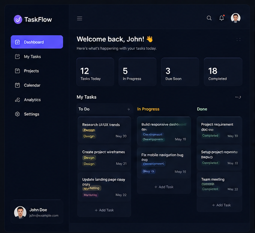
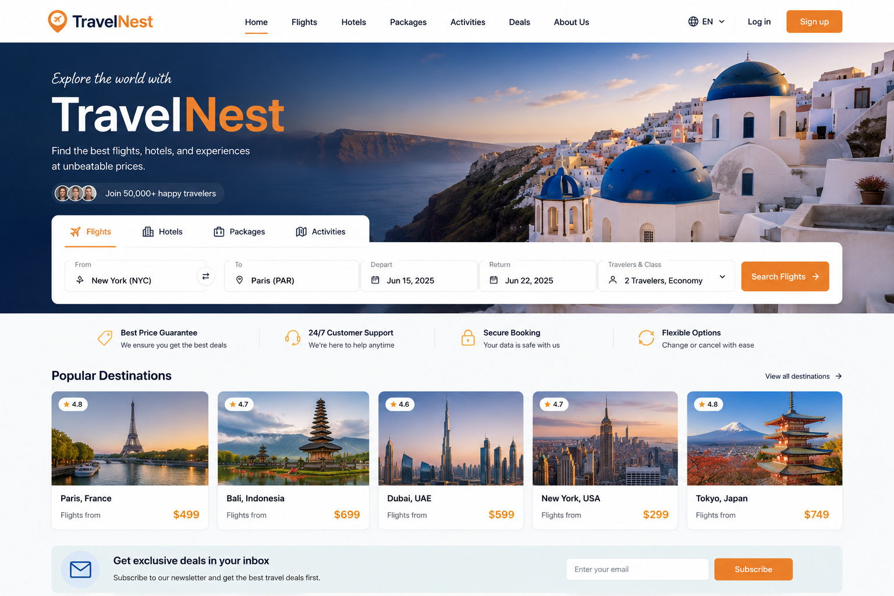
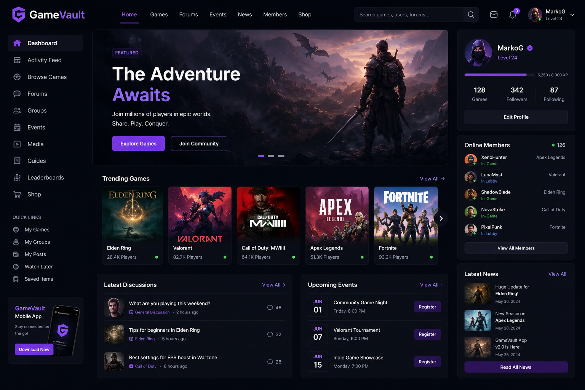
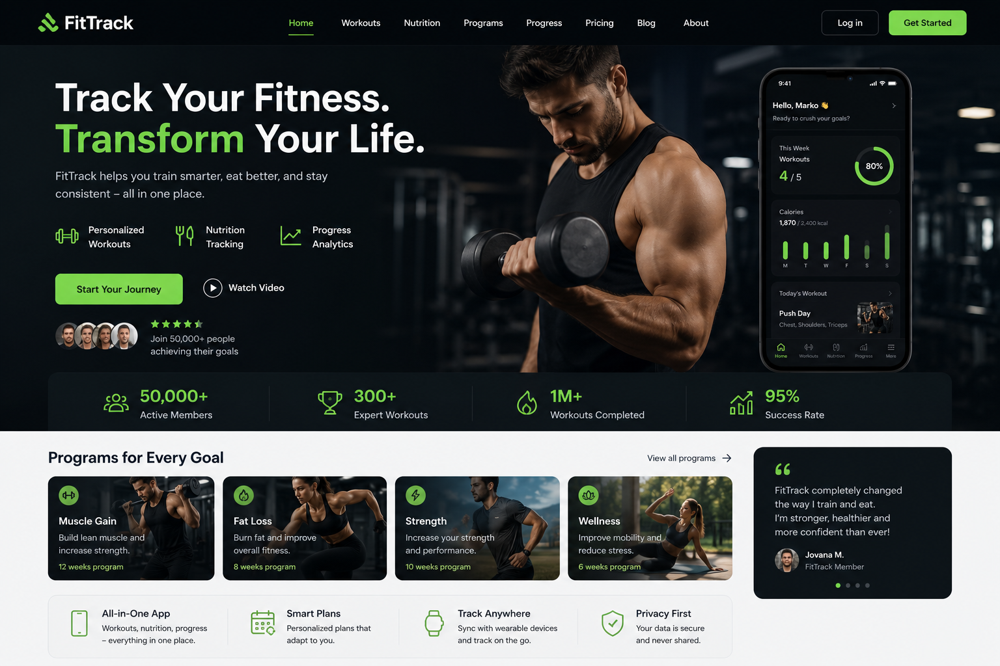
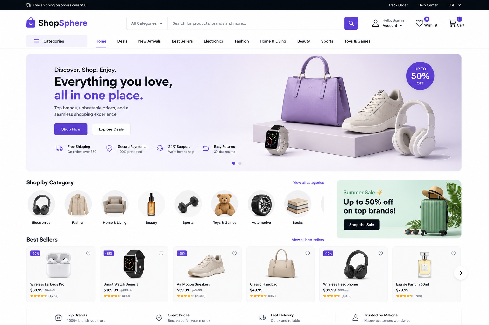

<Luka Lukić/>
Web Designer & Web Developer.
.about-me
Student of Web Technologies with a strong
passion for building
modern, user-focused digital experiences.
Alongside my studies,
I've been working in Quality Assurance for the
past few years,
where I've developed a sharp eye for detail,
problem-solving
skills, and a deep understanding of software
quality and user
experience.
Outside of tech, I enjoy travelling, exploring
new places and
cultures, and spending time gaming. I'm
constantly inspired by
new technologies and love learning how things
work, whether it's
web development, software systems, or the latest
innovations
shaping the industry.
.education
Srednja Tehnička PTT škola
2002-2010
Course in electrical and telecommunications engineering. In addition to regular high school education, participated in many practical projects in and outside of school. Gained foundational knowledge and practical experience in telecommunications technologies and working with industry-related equipment and tools.
Visoka ICT škola
2016-2027
Degree in Internet Technologies. Developed multiple websites and applications using various methods, technologies, and development tools. Gained practical experience in web design, programming, and implementation of modern internet solutions through personal and project-based work.
Visoka ICT škola - Master
2027-2029
Engineer of electrical and computer engineering degree. Acquired professional knowledge and skills in the field of network and software technologies, necessary to solve complex problems in real work environment. Developed practical experience through technical projects and application of modern engineering methods and tools.
.skills
HTML/CSS
JavaScript
PHP
C#
Java
SQL
.projects

TaskFlow
Productivity Management App
TaskFlow is a modern productivity and
task management web
application created to help users
organize their daily
responsibilities, manage projects more
efficiently, and
improve overall workflow. The
application was designed with
a clean and intuitive interface,
allowing users to easily
create, edit, prioritize, and track
tasks in real time.
The platform includes features such as
task categorization,
deadline reminders, progress tracking,
drag-and-drop
organization, and customizable
workspaces tailored to
different productivity styles. Users can
separate personal
and professional projects, assign
priority levels, and
monitor completion status through
interactive dashboards and
visual progress indicators.
A strong focus was placed on responsive
design and
accessibility, ensuring a smooth
experience across desktop,
tablet, and mobile devices. Performance
optimization and
user experience were key priorities
throughout development,
resulting in fast navigation, minimal
loading times, and a
streamlined workflow.
TaskFlow is a modern productivity and
task management web
application designed to help users
efficiently organize
tasks, manage projects, and improve
workflow through an
intuitive interface. It offers features
like task
categorization, deadlines, progress
tracking, and responsive
design for seamless use across all
devices.

TravelNest
Travel Booking Platform
A responsive travel website that allows users to explore destinations, browse hotels, and plan trips through an intuitive interface. The project focused on clean UI/UX design, fast performance, and seamless navigation across multiple devices.

GameVault
Gaming Community Portal
A community-driven platform for gamers to discover new titles, share reviews, and connect with other players. Included user authentication, profile customization, discussion sections, and dynamic content integration.

FitTrack
Fitness Progress Dashboard
A fitness-focused web application that helps users monitor workouts, set personal goals, and visualize progress through interactive charts and statistics. Built with a focus on user experience, accessibility, and responsive layouts.

ShopSphere
E-Commerce Web Store
An online shopping platform featuring product listings, filtering options, shopping cart functionality, and secure checkout simulation. The project emphasized performance optimization, modern design principles, and smooth user interaction.
.ask-me-anything
Have a question, idea, or opportunity you'd like to discuss? Feel free to reach out through the contact form and I'll get back to you as soon as possible. Whether it's about web development, technology, collaboration, or just a friendly conversation, I'm always open to connecting with new people and exploring new opportunities.